1. Acknowledgements
I would like to sincerely thank my supervisor Mr Nicholas Chew for his mentorship and unrivalled support throughout this project, as well as NUS Calibur Robotics for the unwavering support throughout this project.
2. Introduction
RoboMaster University League (RMUL) is a 3v3 robotics competition organised every year by Da-Jiang Innovations (DJI). The competition takes place mainly in a shooting battle format between robots. Participating teams are required to design, develop and create 3 robots in compliance with specifications to form a robotic team.
This year marked the introduction of a brand new robot type, the heavy robot. This robot is the combination of the previous engineer and hero robots, requiring it to carry a mechanism to pick up and attach a modular 42mm projectile launching mechanism. This brand new robot type renders previously developed robots obsolete and thus calls for the development of a brand new robot.
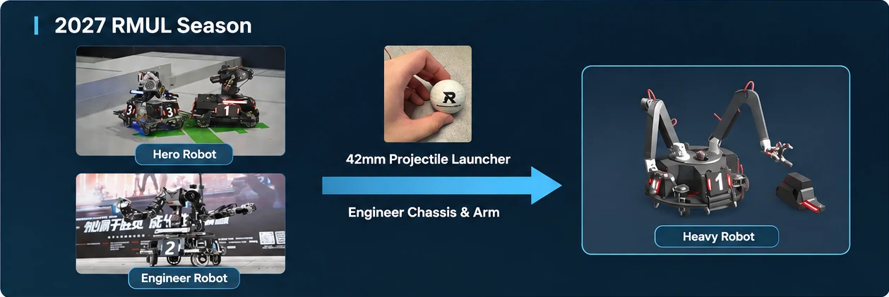
The work encompasses the full mechanical development cycle of the new heavy robot, including mechanical design, prototyping, structural validation, fabrication and electrical integration with the purpose of participating and winning the RMUL competition in March.
Project Stakeholders
There are 2 stakeholders whose needs and requirements affect the development direction of the robot.
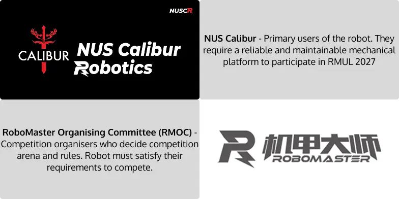
Figure 2: Project Stakeholders
3. Competition Background
Competition Format
A 3V3 match in RMUL consists of the following flow:
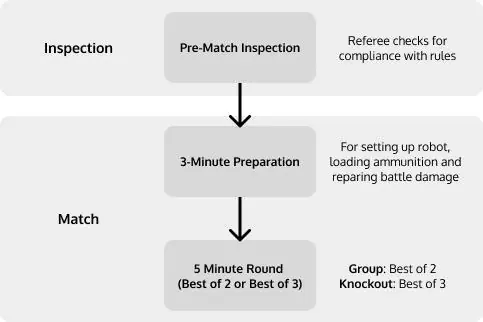
Figure 3: Competition format overview
In a 5-minute round, each team starts with 600 control points. The objective is to reduce the opposing team's control points to zero through capturing control zones and destroying opposing robots, or to retain more control points than the opposing team at the end of the round [1, p. 38].
To capture a neutral zone, a robot must activate the zone's field-interaction module for five seconds without interference from the opposing team. Each controlled zone reduces the opposing team's control points by one point per second, while each opposing robot destroyed reduces its team's control points by 10 points [1, pp. 36–38].
Any damage sustained to the robot during a 5-minute round is considered battle damage. Teams are required to carry out repairs in the 3-minute preparation period between rounds or use a 2-minute technical timeout (2 chances in the entire competition). Robots that cannot be made operational before the required preparation deadline must be removed from the arena for that round [1, pp. 47–49].
Competition Match Footage[7]
Arena Analysis
The 12 m × 8 m arena has resupply zones, high ground and a tunnel; the 2027 revision adds two elevated capture zones alongside the central zone [1, pp. 22–27].
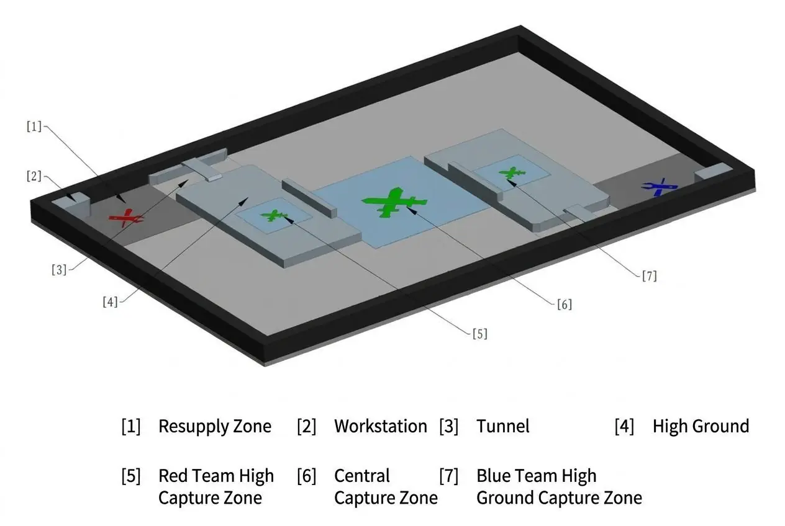 2027 RMUL Arena | 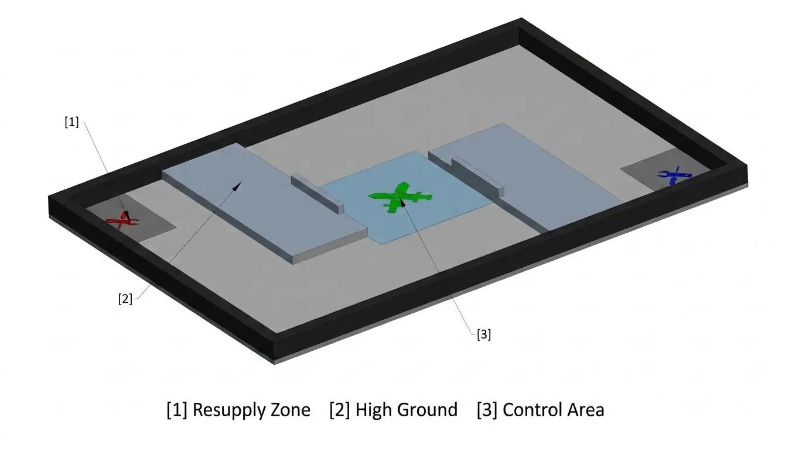 2026 RMUL Arena |
Table 1: 2027 VS 2026 Arena Overview [1, pp. 22–27], [4, pp. 21–25]
Two significant 2027 changes are high-ground capture zones and a 400 mm-high workstation from which the Heavy robot retrieves its launcher [1, pp. 23–27, 37].
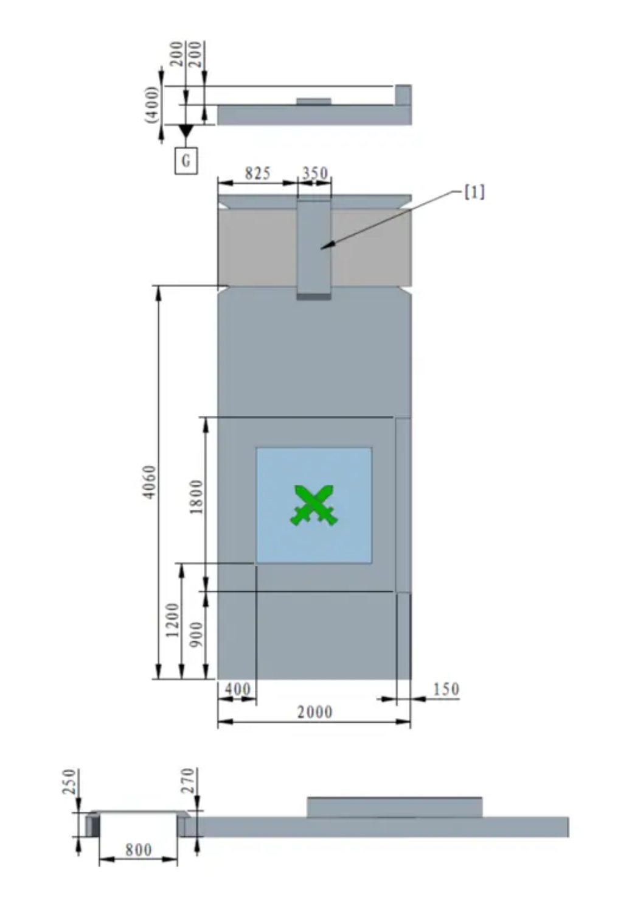 2027 RMUL High Ground | 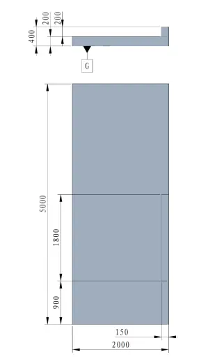 2026 RMUL High Ground |
Table 2: 2027 VS 2026 High Ground Comparison [1, Fig. 3-8, p. 25], [4, Fig. 3-6, p. 24]
The high-ground platform rises approximately 200 mm. Its capture zones make step-climbing a core mobility requirement, while the tunnel offers a shorter route and cooling benefit [1, pp. 25–27].
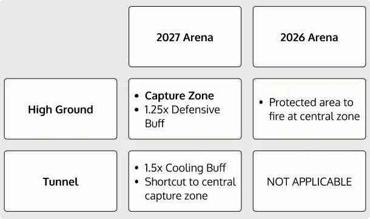
Figure 4: Comparison of Terrain Benefits
Compared to 2026, the 2027 arena places increased emphasis on traversing the high ground and the tunnel. In the 2027 arena, traversing the high ground is now a strategic match-winning condition whilst traversing the tunnel provided an advantageous cooling buff [Appendix A-1].
2 out of 3 capture zones are situated on the high ground, as all captured zones reduce the opponents victory points by 1, the max number of zones that can be captured directly affects who wins as shown in Table 3. Each capture zone can contribute a maximum of 300 points, to overcome the deficit requires destroying the opponent 30 times, which is practically impossible as after destruction each robot has 30 seconds of invincibility [Appendix A-1].
| High Ground Ability (Our Team) | High Ground Ability (Opponent) | Expected Winner | Rationale |
|---|---|---|---|
| Yes | Yes | Contested | Both teams capable of capturing 3 capture zones |
| Yes | No | Our Team | Our team can capture 2 zones uncontested, opponent can only potentially capture 1 zone |
| No | Yes | Opponent | Our team can potentially capture 1 zone, opponent can capture 2 zones uncontested |
| No | No | Contested | Both teams contest central capture zone |
Table 3: High-Ground Access and Tactical Outcomes
The second major arena change is the workstation. The heavy robot’s modular 42mm launcher is placed on the workstation at the start of each round. During the round the heavy robot can choose to equip the launcher mechanism, doing so would provide the ability to fire 42mm projectiles and also provide a 4.5x HP buff. [1, pp. 16–18, 37–38]
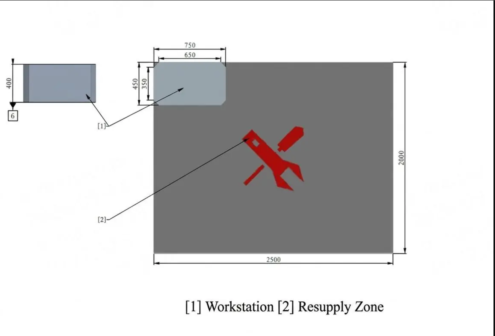
Figure 5: Workstation and Resupply Zone [1, Fig. 3-6, p. 24]
4. Heavy Robot
Mechanical Design Specifications
The Heavy robot is subject to a maximum stowed size of 600 mm × 600 mm × 600 mm (L × W × H), excluding the modular 42 mm launcher. Its maximum expanded dimensions must comply with one of two permitted dimensional requirements, including a limit of 1200 mm × 1200 mm × 1100 mm under the first option [2, Sec. 2.4.1, pp. 26–28]. The Heavy robot has a maximum weight limit of 36 kg, including the battery and referee system, which increases to 41 kg when the modular 42 mm launcher is attached [2, Sec. 2.4.1, p. 27]. Failure to comply with these mandatory construction specifications may result in rejection during inspection, required modifications, or disqualification from the competition [2, Sec. 1, p. 9].
The Heavy robot is also required to incorporate a modular 42 mm launcher capable of firing 42 mm projectiles [2, Sec. 2.4.1, pp. 28–29]. According to the official RoboMaster rules Q&A, the launcher module may consist of a 42 mm Speed Monitor Module and a flywheel-based firing mechanism, without requiring the ammunition storage or feeding mechanism to be integrated into the detachable module [6, Q&A Nos. 31 and 74]. Alternative firing mechanisms are also permitted, provided that they satisfy the relevant construction and functional requirements [2, Sec. 2.4.1, pp. 28–29]. Although the Heavy robot is not required to possess autonomous launcher detachment capability [6, Q&A No. 21], the modular launcher must be installed during the match before it can be used to fire 42 mm projectiles [1, Sec. 3.3.6, pp. 37–38].
Electrical Design Specifications
The Heavy robot is subject to a chassis power limit of 50W, the lowest among all robots participating in the 2027 RMUL 3v3 competition [1, Sec. 3.1.1]. This limit applies to the power used for chassis locomotion rather than the robot's total electrical power consumption. Under the revised chassis power definition, certain motors, including swerve-drive steering motors and balancing leg-joint motors, are excluded from the chassis power calculation [2]. Exceeding the 50W limit results in the depletion of a 60 J energy buffer. If the buffer is exhausted while the chassis continues to exceed the power limit, the referee system cuts power to the chassis for five seconds [1, Sec. 3.3.1.4]. Compared to Infantry and Sentry robots, which have chassis power limits of 75–90 W and 100 W respectively, the Heavy robot has a significantly lower power budget. This will restrict its acceleration and maneuverability, making it more vulnerable to enemy attacks [1, Secs. 3.1.1–3.1.3].
| Robot | Chassis Power |
|---|---|
| 2027 Heavy | 50W |
| 2027 Standard | 90W |
| 2027 Sentry | 100W |
| 2026 Hero | 100W |
| 2026 Standard | 90W |
| 2026 Sentry | 100W |
Table 4: Comparison of Chassis Power
Historical Hero Robot Projectile Use
Although the Heavy robot is newly introduced for the 2027 competition, its 42 mm launcher shares similarities with the Hero robot used in previous competitions. An analysis of the top four teams from each of the nine 2026 RMUL regional competitions, together with Calibur, was conducted, comprising 435 firing records across 37 teams.
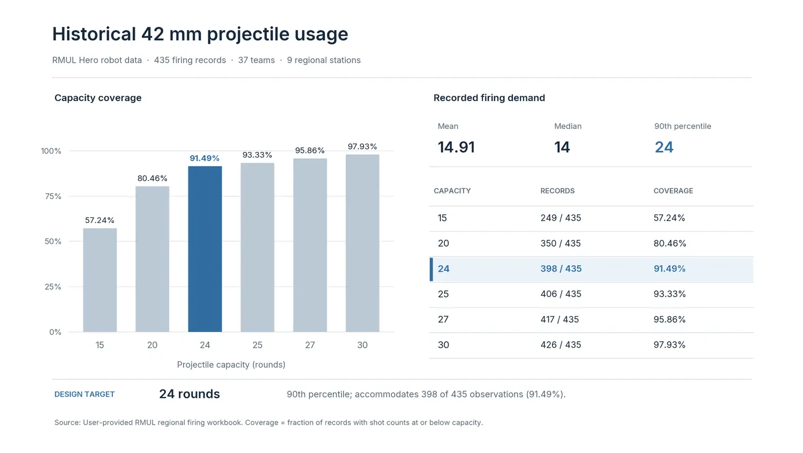
Figure 6: Analysis of 42mm Projectile Usage
As shown in Figure 6, the average number of 42 mm projectiles fired was 14.91 rounds, with a median of 14 rounds and a maximum observed usage of 36 rounds. Further analysis indicates that the 90th percentile of projectile usage was 24 rounds. Based on these findings, a projectile capacity of 24 rounds is a reasonable max target for the Heavy robot. Providing sufficient capacity while optimising space requirements.
Historically, Hero robots have been disadvantaged in sustained close-quarter combat due to their relatively low firing frequency. This limitation remains relevant to the Heavy Robot. The Heavy Robot has a theoretical max burst rate of 2 rounds, compared to 23 rounds for Infantry robots and 26 rounds for Sentry robots [1, pp. 16–20, 29–30]. Although 42 mm projectiles inflict ten times that of 17 mm projectiles, the lower firing frequency limits opportunities to compensate for missed shots [1, p. 29]. Consequently, occupying elevated positions offers a potential tactical advantage, allowing the Heavy Robot to engage opponents from greater distances while reducing exposure to sustained close-range attacks. This approach is particularly relevant to the redesigned 2027 RMUL arena with the dedicated high-ground control zones [1, pp. 23–27].
Design Requirements
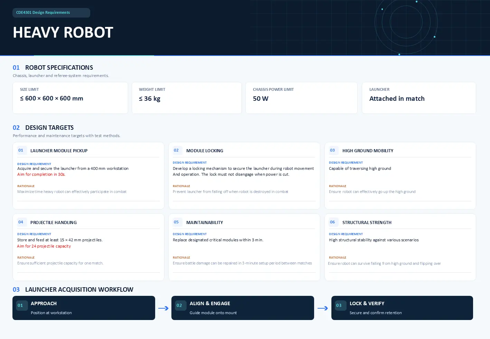
The primary objective of this project is to execute the complete mechanical engineering design and development lifecycle of the RoboMaster Heavy Robot to ensure full compliance with the updated RoboMaster University League (RMUL) 3v3 rules and compete effectively in the March competition. The scope of work encompasses the following key domain areas and technical deliverables:
- Chassis and Mechanical Structure Design: Design and fabrication of a robust, compliant mobile chassis conforming strictly to the physical dimensions (< 600mm x 600mm x 600mm) and weight limit (< 36kg). The chassis must be designed for rapid maintenance to permit critical part replacement within 3 minutes.
- Modular 42mm Launcher & Attachment Mechanism: Development of a detachable 42mm projectile launching system capable of holding and firing at least 15 projectiles. This includes engineering a rapid mechanical attachment and locking mechanism that enables the robot to pick up and secure the launcher from a 400mm workstation platform in under 1 minute during live match play.
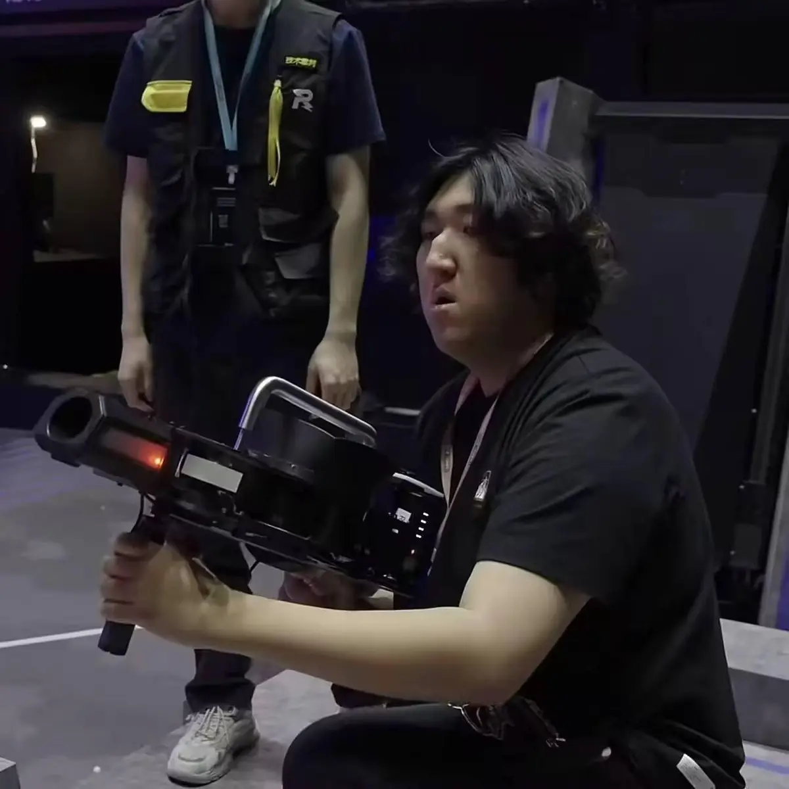
Figure 7: Organising Committee hypothetical implementation of the modular launcher